長期トレンド
JKMとJEPXシステムプライスの推移グラフ
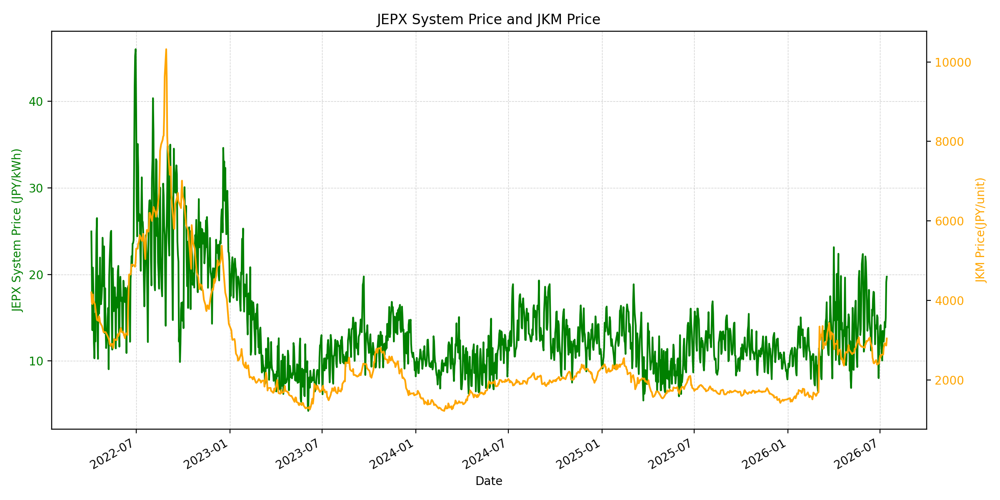
WTIの推移グラフ
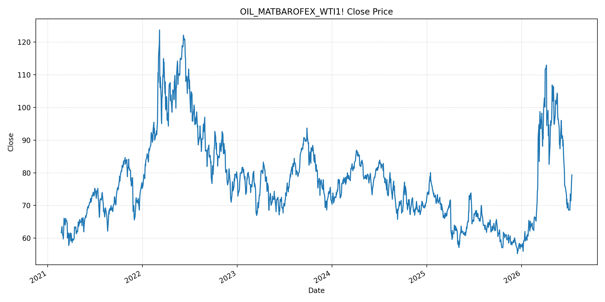
JEPXエリアプライスグラフ（直近一年分）
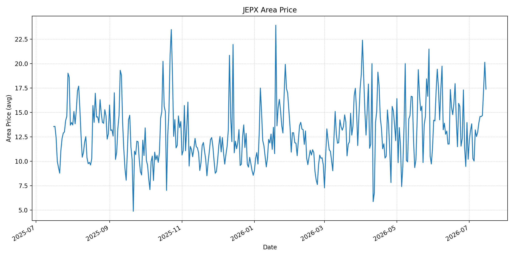
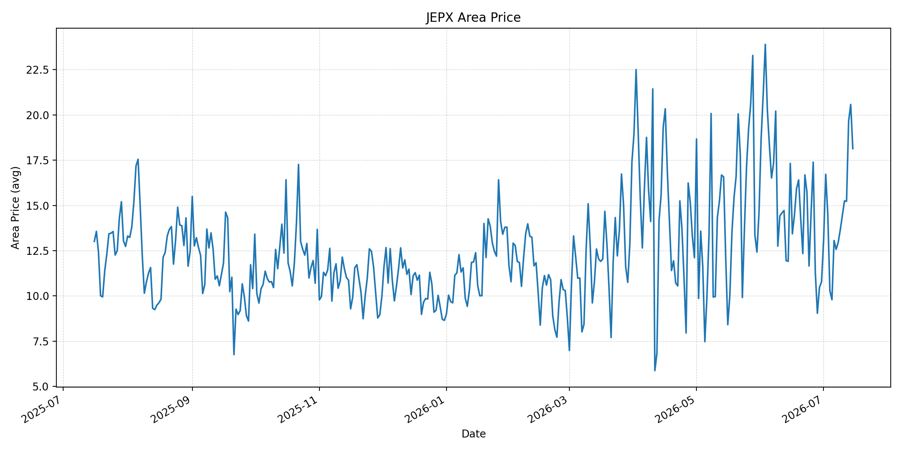
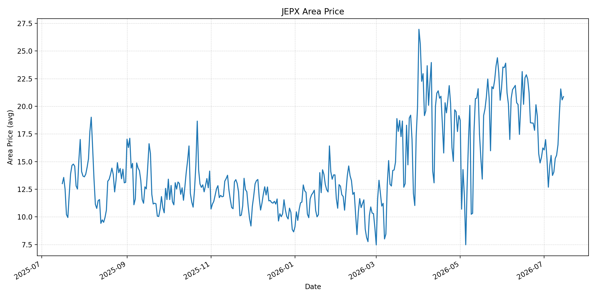
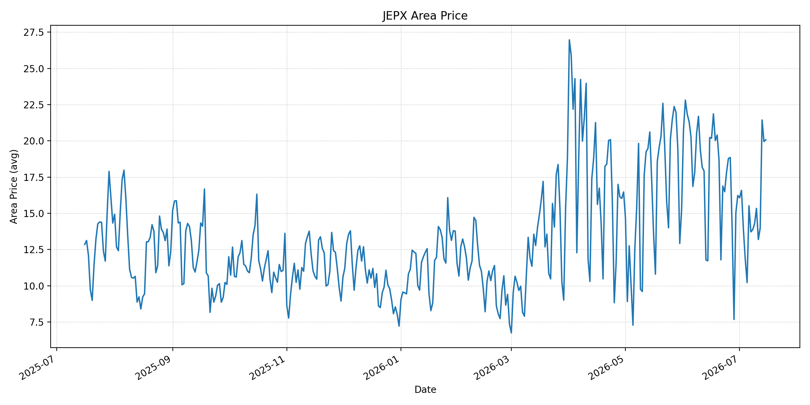
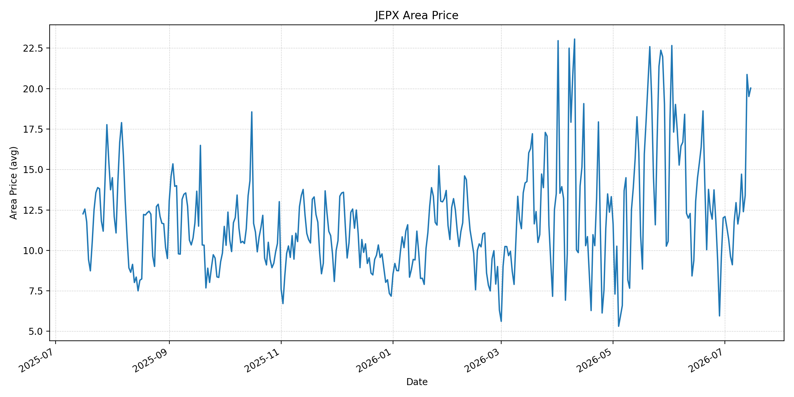
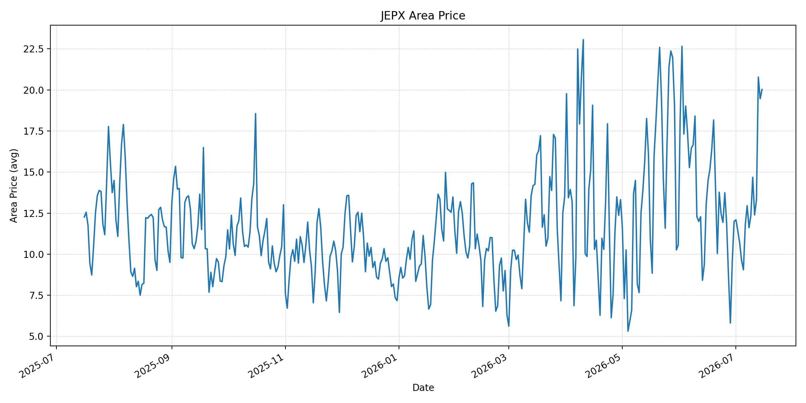
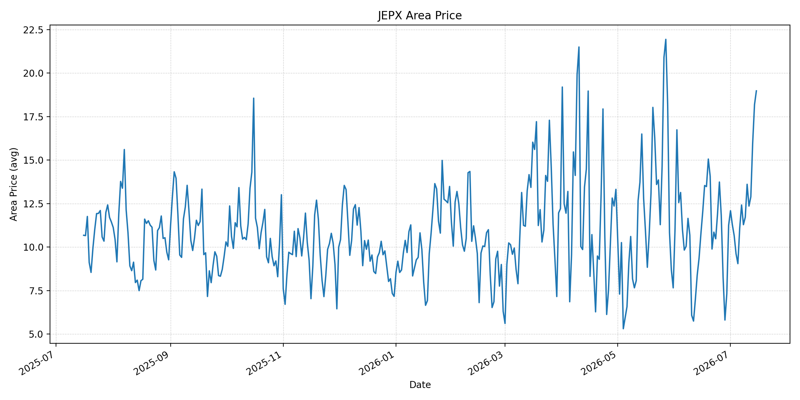
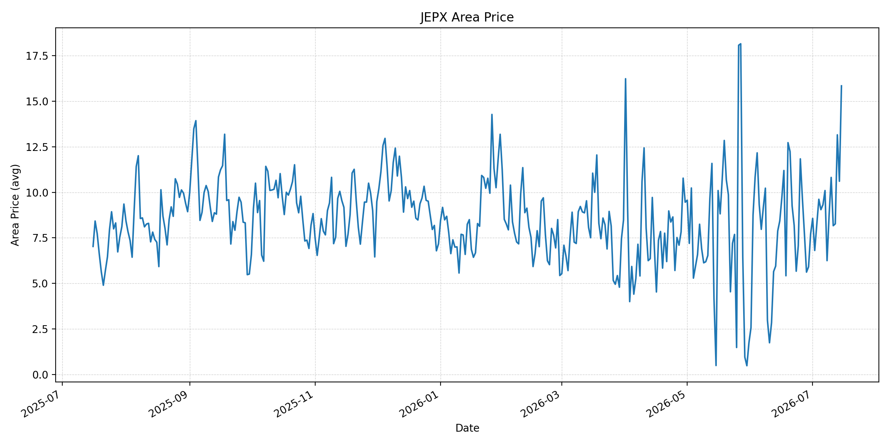
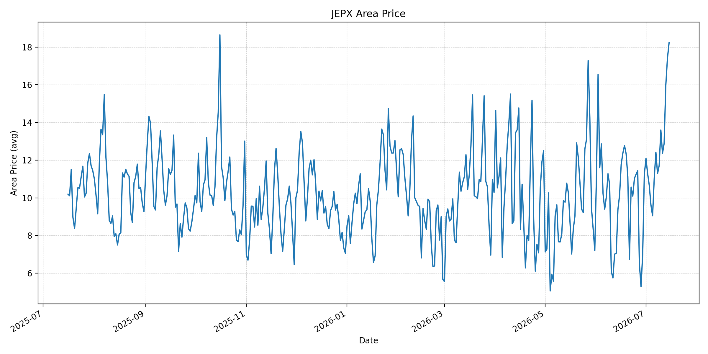
短期トレンド
JKMとJEPXシステムプライスの推移グラフ
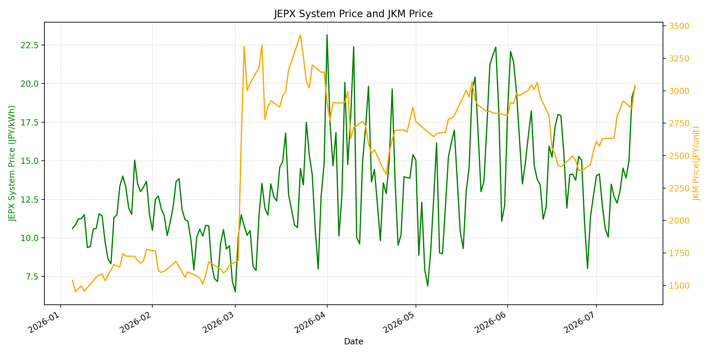
WTIの推移グラフ
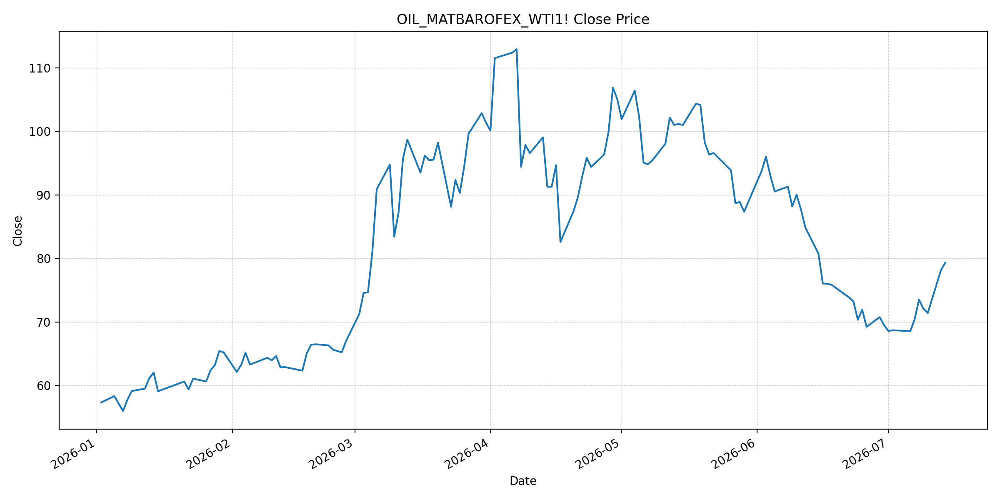
JEPXシステムプライス
JEPXは受渡日ベースの最新非空値で評価しています。最新値は 2026-07-15 分です。先週終値は 2026-07-08 時点の直近値、先月終値は 2026-06-30 時点の直近値で評価しています。
| エリア | 当日価格 | 前日価格 | 前日比（％） | 先週終値 | 先週比（％） | 先月終値 | 先月比（％） | 過去最高値 | 最高値比（％） |
|---|---|---|---|---|---|---|---|---|---|
| システム | 20.13 | 19.74 | 1.98 | 12.25 | 64.33 | 12.73 | 58.13 | 64.06 | -68.58 |
| 北海道 | 17.39 | 20.13 | -13.61 | 12.96 | 34.18 | 10.21 | 70.32 | 73.92 | -76.47 |
| 東北 | 18.14 | 20.58 | -11.86 | 12.96 | 39.97 | 10.78 | 68.27 | 84.92 | -78.64 |
| 東京 | 20.88 | 20.58 | 1.46 | 14.06 | 48.51 | 16.23 | 28.65 | 86.13 | -75.76 |
| 中部 | 20.07 | 19.95 | 0.60 | 13.87 | 44.70 | 16.23 | 23.66 | 52.06 | -61.45 |
| 北陸 | 20.03 | 19.51 | 2.67 | 11.63 | 72.23 | 12.01 | 66.78 | 46.48 | -56.91 |
| 関西 | 20.03 | 19.46 | 2.93 | 11.61 | 72.52 | 12.00 | 66.92 | 46.48 | -56.91 |
| 中国 | 18.98 | 18.19 | 4.34 | 11.29 | 68.11 | 11.26 | 68.56 | 46.48 | -59.17 |
| 四国 | 15.85 | 10.61 | 49.39 | 6.25 | 153.60 | 7.72 | 105.31 | 46.48 | -65.90 |
| 九州 | 18.24 | 17.40 | 4.83 | 11.28 | 61.70 | 11.24 | 62.28 | 40.54 | -55.01 |
LNG先物価格
最新値は 2026-07-14 の LNG(close) です。前日価格は直近非空値の 2026-07-13、先週終値は 2026-07-07 時点の直近値、先月終値は 2026-06-30 時点の直近値で評価しています。
| 当日価格 | 前日価格 | 前日比（％） | 先週終値 | 先週比（％） | 先月終値 | 先月比（％） | 過去最高値 | 最高値比（％） |
|---|---|---|---|---|---|---|---|---|
| 3041.00 | 2863.00 | 6.22 | 2637.00 | 15.32 | 2541.00 | 19.68 | 10319.00 | -70.53 |
石油先物価格
最新値は 2026-07-14 の OIL(close) です。前日価格は直近非空値の 2026-07-13、先週終値は 2026-07-07 時点の直近値、先月終値は 2026-06-30 時点の直近値で評価しています。
| 当日価格 | 前日価格 | 前日比（％） | 先週終値 | 先週比（％） | 先月終値 | 先月比（％） | 過去最高値 | 最高値比（％） |
|---|---|---|---|---|---|---|---|---|
| 79.34 | 78.14 | 1.54 | 70.44 | 12.63 | 69.50 | 14.16 | 123.70 | -35.86 |
ニュース
イラン情勢に関するニュース
- 2026年7月14日、APは、米軍がイランによる商船攻撃への対応としてイラン港湾への封鎖を再開したと報じました。米国は封鎖再開前にも追加攻撃を実施し、イラン側は米国がホルムズ海峡に対するイランの「実効的主権」を阻もうとしていると主張しています。 参照: AP, 2026-07-14
- Guardianは、トランプ大統領がホルムズ海峡通航船への20％通航料案を撤回した一方、イラン港湾への封鎖は継続すると報じました。米軍はブシェール、バンダルアッバースなどを攻撃し、イランはバーレーン、ヨルダン、UAE関連タンカーを標的にしたとされています。 参照: Guardian, 2026-07-14
ホルムズ海峡経由の石油・LNGに関するニュース
- APは、開戦前に世界の取引対象となる原油・天然ガスの約5分の1がホルムズ海峡を通過していたと整理しています。米国の封鎖再開とイランの商船攻撃により、石油、肥料、その他商品価格の上振れ懸念が再燃しています。 参照: AP, 2026-07-14
- WSJは、通航料案の撤回後も油価は高止まりし、WTIが79.34ドル、Brentが84.73ドルで引けたと報じました。封鎖解除の条件として、海峡を妨害なく通過する船舶数が1日20〜40隻程度に戻ることが意識されているとの見方も示されています。 参照: WSJ, 2026-07-14
ホルムズ海峡経由でない石油・LNGに関するニュース
- Axiosは、UAEのWest-Eastパイプライン、イラクのBasra-Hadithaパイプライン、新港湾計画など、ホルムズ依存を下げるインフラ計画が加速していると報じました。既存・計画中の能力を含めると、2027年末に戦前のペルシャ湾輸出の45％超、2028年末に60％超をホルムズリスクから切り離せる可能性があります。 参照: Axios, 2026-07-14
- 同じAxios記事は、代替ルート整備後も原油・石油製品で日量700万〜900万バレルがホルムズリスクに残り、カタールのLNG輸出には現実的な代替が乏しいと指摘しています。非ホルムズ対策は中長期の緩衝材ですが、LNGには即効性が限られます。 参照: Axios, 2026-07-14
日本国内のイラン戦争に関係するニュース
- 過去24時間で、JEPX制度、国内電力需給ルール、または日本政府のイラン戦争関連対策を直接変更する主要な新規公表は確認できませんでした。
- 関連する国内材料として、経済産業省は2026年5月20日、2026年度夏季は全エリアで安定供給に最低限必要な予備率3％を確保できるため節電要請を実施しないと発表しています。一方で、国際情勢の変化、異常気象、火力発電所の集中はリスクとして明記されています。 参照: 経済産業省, 2026-05-20
インサイト
ニュース事項による日本の電力市場への影響（短期：数日〜1週間）
- JEPXシステムプライスは 20.13 円/kWhで前日比 1.98%、先週比 64.33% と高止まりしています。東京 20.88 円/kWh、中部 20.07 円/kWh、関西 20.03 円/kWhと主要需要地が20円台に乗っており、燃料・夏季需給のリスクプレミアムが残っています。
- OILは 79.34 で前回非空値比 1.54%、先週比 12.63%、LNGは 3041.00 で前回非空値比 6.22%、先週比 15.32% です。通航料案は撤回されましたが、米国の封鎖とイランの商船攻撃が続くため、数日〜1週間は燃料費・保険料の上振れがJEPXの下支え要因です。
- 北海道と東北は前日比で下落しましたが、四国は 49.39% 上昇し、先週比では 153.60% です。地域別の需給や再エネ出力で日々の差は出ますが、ホルムズ情勢が悪化している間は全国平均の価格低下は限定的です。
ニュース事項による日本の電力市場への影響（長期：1ヶ月〜半年）
- 非ホルムズのパイプライン・港湾計画は、2027〜2028年にかけて原油輸送の耐性を高める材料です。ただし、カタールLNGには現実的な代替が乏しく、LNGが先月比 19.68% 上昇している現状では、日本の火力燃料調達コストは中期的にも下がりにくいです。
- JEPXシステム価格は先月比 58.13%、東京は 28.65%、関西は 66.92% 上昇しています。METIは夏季の節電要請なしとしていますが、国際情勢・異常気象・火力発電所集中をリスクに挙げており、燃料調達が不安定なら予備率があっても価格ボラティリティは残ります。
- OILは過去最高値比 -35.86%、LNGは -70.53% と歴史的高値からはなお低位です。一方で、ホルムズの通航管理をめぐる米イラン対立が制度化すると、スポット価格よりも輸送・保険・調達先分散コストが1ヶ月〜半年の電力価格に残る可能性があります。